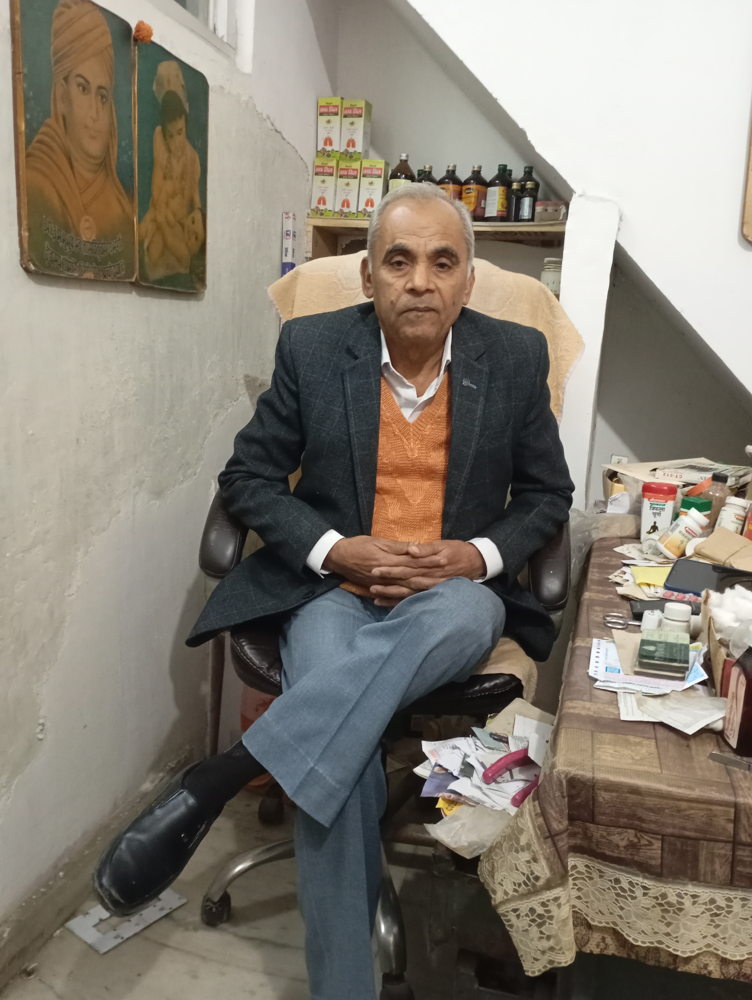

Most trusted ayurvedic clinic of Delhi NCR
Are you looking for the Best ayurvedic Clinic in Delhi NCR?
Book an appointment with our Specialist Ayurvedic Doctor.

गुर्दे व पित्त की थैल्ली की पथरी का बिना ऑपरेशन आयुर्वेदिक दवा से ईलाज
100 प्रतिशत प्राकृतिक ईलाज कोई भी दुष्प्रभाव नहीं होगा।
Treatment of kidney and gall bladder stones with Ayurvedic medicine without operation.
100 percent natural remedy with no side effects.
दांत रोग: पायरिया, खून आना, दर्द रहना, मुंह से बदबू आना, दांत का हिलना व ढंडा गर्म पानी लगना आदि।
शुद्ध जड़ी बुटियों से बनाया गया दंत मंजन मसूडो को मजबूत बनाता है।
Dental diseases: Pyorrhea, bleeding, pain, bad breath, loose teeth, cold water etc.
Toothpaste made from pure herbs strengthens the gums.
चर्म रोग-पुराना दाद, खाज, सफेददाग, कील मुहासे के लिए आयुर्वेदिक दवा।
Ayurvedic medicine for skin diseases-chronic ringworm, eczema, vitiligo, pimples.
गुप्त रोग:- स्वप्न दोष, शीघ्रपतन व नपुंसकता
Secret diseases:- Dream defects, premature ejaculation and impotence
जड़ी-बूटियों एवं भस्मो द्वारा गुप्त रोगों का उपचार किया जाता है।
Hidden diseases are treated with herbs and ashes.
पिलिया, बवासीर, भगंदर व नासूर का बिना ऑपरेशन सफल इलाज
Successful treatment of jaundice, piles, fistula and fistula without operation